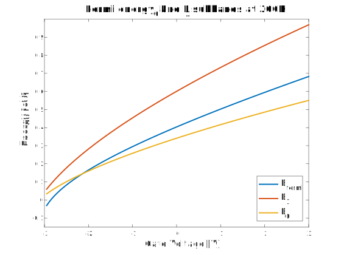

High-power and high-frequency applications, as well as optoelectronics, RF electronics, demand materials whose characteristics can be thoroughly tailored. Since alloys can widely change their optical, transport and electrical properties upon their concentration, they are the most used material for those applications |In general alloys are based on different semiconductive compounds (e.g. GaN, GaAs and InP). Depending on the number of elements they are made of they can be ternary or quaternary such as $Al_xGa_{1-x}As$ and $In_xGa_{1-x}As_yP_{1-y}$.
An heterostructure is a physical system made of materials with different bandgap but with resembling structural properties i.e. crystal lattice and lattice parameter.
Heteroepitaxy is the method underlying the modern growth technologies to create these systems, usually by MOCVD or MBE. They may harness buffer layers (i.e. alloys with gradually changing composition) to smooth the transition from one material to another to reduce strain and avoid defects.
The III-nitrides bandgaps are large and direct, in detail, considering Wurtzite structure, they can vary from 0.7eV (InN), 3.4 eV (GaN) up to 6.2 eV (AlN).
Because of the wide energy gap and significant bond strength III-nitrides have gained remarkable importance, mainly because they overcome the limitations of GaAs based electronic devices, enabling the design and fabrication of optoelectronic devices at short wavelength such as LED, laser printers, under water communications, high density information storage and high-temperature transistors.
In particular, AlGaN/GaN based High Electron Mobility Transistors (HEMT) play a crucial role in next generation 3G/4G mobile phone stations, radar, mixers and oscillators.
GaN-based materials provide high frequency operation (tens of GHz), high saturation velocity ($\sim 10^7 cm/s$), large breakdown electric field ($3 MV/cm$) and high power density of an AlGaN/GaN HEMT over $11W/mm$. Polarization fields are of remarkable importance as they allow the formation of larger two dimensional electron gas (see chapter ##) compared to those in AlGaAs/GaAs based HEMT.
For all these reasons GaN-based HEMTs have a key role in the development of advanced electronic devices.
However, despite all the highly promising features, there is still lot of challenging work to carry out in order to gain a deep understanding of their behavior. In fact, in order to fabricate novel devices based on III-nitrides, good description of band structure, quantum confinement polarization charges and the electron mobility has to be obtained.
Heterojunction equilibrium
Heterojunction is formed when two materials with different bandgaps are brought to contact. Electrons start to diffuse from the higher Fermi energy material to the lower one while holes diffuse along the opposite direction. The carriers flow leads to an accumulation of charges at the interface creating an electric field. The electric field generates a drift force on the carriers counterbalancing the diffusion process. The two effects, diffusion and drift, are balanced at the thermodynamic equilibrium that is obtained when Fermi Level results constant over the whole system.
The presence of the electric field at the interface causes the bands structure to bend. The electric field and the potential characterizing the heterojunction at the equilibrium are said to be \textit{built-in}.
The solution, as discussed in chapter ##, can be found calculating self-consistently the Poisson equation, which relates the total charge density to the potential, and the time-indipendent Schroedinger equation, whose solutions are the bound states wavefunctions.
Below, the image shows the band diagram structure and its evolution at the interface.
The conduction and valence band discontinuities are determinate by the electron affinities $\chi_i$ of the two semiconductors using the Anderson's rule, also known as affinity rule, which reads:
The vacuum energy level is continuous through all the junction but not constant because it is affected by the formation of the built-in potential. It following the bending of the conduction band so to keep constant $\chi$ in each material.
Therefore, for an heterostructure made of two intrinsic semiconductors the built-in potential at thermal equilibrium becomes:
However if the junction is made of doped materials eq
is no longer valid. Considering a p-doped material (1) and a n-doped material (2) forming an heterojunction we have to express the Fermi energies as function of the dopants concentrations. Thus, the built-in potential can be written as:
where $N_1$ and $N_1$ indicate the dopant concentration while $N_{c,2}$ and $N_{v,1}$ indicate the effective density of states in the conduction and the valence band of the specified semiconductors.
Bound states exist in the potential and they are occupied according to Fermi-Dirac statistics. Such confinement normal to the interface generates a 2D high-mobility carriers gas parallel to the junction.
Since carriers come from the doped region but travel in the undoped one, they can be considered as traveling freely because scattering with dopant does not occur.
In addition, due to dimensional constraints and the typical length of the well of $1 \div 10 nm$, quantization effects appears on the band structure and density of states (DOS or g).
Two dimensional electron gas (2DEG)
The 2DEG is the sheet carrier charge concentration ($n_s$) forced by the built-in electric field to the heterointerface. Subbands are created due to quantum confinement.
Schroedinger's equation and Poisson equation are to be solved self-consistently if the real physical solution is sought. Furthermore, the total potential $V_{tot}$ should account for the electrostatic electron-electron repulsion, exchange-correlation effect and barrier potential. The interface carriers concentration $n_s$ influences $V_{tot}$ and at the same time $n_s$ is determined by the sum of each subband contribution weighted by the probability to find electrons in that state, i.e. the square modulus of the wavefunction.
For sake of simplicity, what it follows, it is a simple, semiclassical yet efficient explanation of the physics underlying this system.
The energy of each particle is given by the energy of the sub-band plus the kinetic contribution from the 2D free motion parallel to the junction. Thus, the available energy levels are determined by:
Consequentially, the density of states of the 2DEG is a step function because as $E>E_j$ a higher sub-band can host more electrons. However, for each sub-band they can accelerate in the plane direction. The final formula for the 2DEG density of stats results:
The triangular quantum well is the most suitable model to describe the 2DEG according to semi classical approximation. To analyze let us consider a 1-dimensional problem with an uniform and constant electrical field along x-direction $\vec \varepsilon = \varepsilon \hat{x}$ . The electrostatic potential to be added in the time-independent single-particle Schroedinger equation in order to implement the interaction of an electron with this electric field is $\phi (x) = q \varepsilon x $.
It follows that the Schroedinger equation to be solved is:
\left[-\frac {\hbar^{2}}{2m^2 }\nabla^{2}+V(\mathbf r )\right]\Psi (\mathbf r)= E\Psi (\mathbf r )
where $x_0$ is the so called characteristic length, $E_0$ the characteristic energy and $s$ a new adimensional variable, eq
can be simplify and rewritten as:
\frac{d^2 \Psi(s)}{ds^2} = s\Psi(s)
The solutions for this equation are well known and are called Airy functions. To satisfy physical requirements only one Airy function is acceptable, namely
Eigenvalues are calculated by applying the boundary condition according to which the wavefunction is null at $x=0$. Stationary states energies are determined by the zeros of the Airy functions and are directly proportional to the characteristic energy $E_0$. Therefore the solution depend also on the effective mass of the electron and the electric field. Below, the expression for the general eigenvalue $E_j$ is given.
For small value of $j$, usually the first ten, eq
is not valid, therefore tabulated values are used.
For the purpose of this report we highlight that the built-in electric field quantum confinement and forms electron surface density. In specific, this concentration is called sheet carrier charge density or 2DEG. It will be shown that polarization fields play a main role in the formation of the 2DEG as well.
Using a capacitor-like model$\textbf{ELABORATE}$, the built-in electric field is found to be linearly proportional to $n_s$. Hence it is valid to rewrite:
E_j = \gamma_j (n_s)^{2/3}
This step is reasonable, in fact even though the relationship of $E_j$ with $n_s$ is physically acceptable, the triangular well is a simplistic approximation therefore the proportionality constants are experimentally determined.
Below, the MATLAB code shows how bound states energies in the triangular well and their probability of occupation have been calculated.
global d T E_bound_state Efermi
% Airy functions coeffients [C0 C1 .. ]
c = [2.338 4.088 5.521 6.787 7.944 9.022];
for i=7:30
c(i) = (3*pi/2 * (i-0.25))^(2/3);
end
El_field = El_fiel_trig_well(E_bound_state,c(1));
%quantum well depth
Emax= El_field*d;
%using the Electric field estimated below we can compute more bands.for i=1:length(c)
Airy_energies(i) = Energy_trig_well(El0, c(i))
P_occupation(i) = fermi(Airy_energies(i), Efermi(V0), T);
endfunction El = El_fiel_trig_well(En,c)
global q h m
eq = @(El) En - 1./q*c*((q*El*h).^2./(2*m)).^(1/3); %expressed in eV
El = fzero(eq, 1);
endfunction En = Energy_trig_well(El,c)
global q h m
eq = @(En) En - 1/q*c*((q*El*h).^2./(2*m)).^(1/3);
En = fzero(eq, 1);
endfunction P = fermi(E, Ef, T)
global Kb
P=1/(1+ exp((E-Ef)/(T*Kb)));
end
Wurtzite semiconductors in heterostructures
Polarization induced sheet charge density is here discussed. The focus will be on III-N semiconductors having wurtzite crystal lattice. This 3D atomic arrangement is noncentrosymmetric hence it originates a pyroelectric compound system, i.e. with spontaneous polarization. Such material is consequently piezoelectric. Therefore the total polarization is given by these two properties in wurtzite lattices.
At heterointerfaces the polarization gradient leads to bound interface charges according to the general Gauss's law:
\vec \triangledown \cdot \vec D = \rho \quad with \quad \vec D = \epsilon \vec \varepsilon + \vec P
AlN, InN and GaN have high spontaneous polarizations (up to $0.09C/m^{-2}$ as in AlN) meanwhile the spontaneous polarization change rate with temperature is small (e.g $7.5 \mu C / (Km^{-2}$) for AlN) at room temperature. This is extremely useful for high power and high temperature applications, e.g. microwave amplifier, lasers and surface acoustic wave devices (SAWs). As to what regards the piezoelectric constants it has been reported that they are greater by a factor ranging from 5 to 20 than those of III-arsenides semiconductors
. Spontanoues and piezoelectric polarization gradients cause strong electric field at heterojunctions
and this has significant impact on charge distribution and lifetime of carrier within the 2DEG.
Polarization plays a fundamental role in pseudomorphic wurtzite AlGaN/GaN based transistors according to scientific literature ($\textit{Undoped AlGaN/GaN HEMTs for Microwave Power Amplification}$, Lester F. Eastman, et al.,IEEE TRANSACTIONS ON ELECTRON DEVICES, VOL. 48, NO. 3, MARCH 2001).
The most common growth direction on GaN substrate is normal to the basal plane {0001} where atoms are arranged in bilayers. These bilayers consist of closely spaced hexagonal sheets, one formed by cations and the other by anions thus leading to polar faces. Therefore in GaN-based heterostructure the basal face is either Ga or N and this leads repsectively to $0001$ or $000 \bar 1 $ polarity. It is important to notice that different polarity determines different physical and chemical characteristics. Ga-faced GaN means that Ga atoms occupy top positions of the {0001} bilayer (in case of N-faced it is analogous).
Surface defects and surface contamination can screen bound surface charge due to polarization discontinuity across an interface. Nontheless, such sheet charge accumulation can lead to two dimensional electron gas formation because it can occur that a surface electron density builds up in order to compensate the excess of positive polarization induced charge.
It should be clear at this point that 2DEG in AlGaN/GaN devices is influenced by internal as well as external properties. This opens new ways to modulate carrier concentration of the 2DEG with respect to GaAs-based devices. Sensors exploiting polarization induced 2DEG can be built and these can rely on three main working principle: surface charge manipulation (interaction with ions and molecules), mechanical stress application (pressure) and direct carriers manipulation (external electric field).
High Electron Mobility Transistors (HEMTs)
This chapter will firstly briefly introduce HEMTs and it will secondly discuss a simple physics-based electrical model for HEMTs.
2DEG leads to outstanding transport properties in particular its high electrical mobility can reach $\sim 10^3 cm{2}/(V s)$ at room temperature
. In addition, GaN has excellent electrical and thermal characteristics, to be more specific it is also electrically stable and it is a superior heat conductor. GaN-based devices offer advantages such as high breakdown field (critical breakdown field $\sim 3 \div 5 MV/cm$), high charge density and very high electron mobility
,
. In HEMT the channel carrier density $n_s$ is given by eq
according to the simplified model. Since $n_s$ and the confinement electric field are related, the gate voltage can be used to vary the interface electric field hence controlling the number of carrier in the 2DEG. The threshold voltage is the gate voltage for which $n_s$ is zero. $V_{off}$ indicates the threshold voltage for zero bias between source and drain.
The charge control law yields:
n_s = \frac{\epsilon }{q d}(V_g - V_{off} - E_f)
$E_f$ in measured with respect to the conduction band value at the interface on the smaller bandgap material side. The charge control law is worked out analysing the electrostatics in the wider bandgap material thus resolving in this region the Gauss's equation.
Upon further increase of $V_g$ the conduction band in the wide bandgap material may bend so much that for some $x=x_s$ it equals the Fermi level: $ E_c (x_s) = E_f $. The voltage that realizes this condition is called saturation gate voltage $V_{g,SAT}$. For $V_g > V_{g,SAT}$ a sheet of free carrier is formed in the barrier layer between the gate metallic contact and the 2DEG because $ E_f $ enters the conduction band. This charge accumulation contribute to an additional parisitic channel. In fact, raising $V_g$ leads to a growth of this parasitic charge with no further increase in $n_s$. Therefore, the sheet charge density of the 2DEG has a saturation point $n_{s,SAT}$ that is due to the so called shielding effect caused by the parasitic channel charge in the barrier layer. To increase $n_{s,SAT}$ dopants concentration ($N_{dop}$) and conduction band discontituity have to be raised. Neglecting constants and further parameters it is valid to state that $n_{s,SAT} \sim N_{dop}$ and $n_{s,SAT} \sim \Delta E_c ^{1/2}$ considering only dominant orders.
Charge density Analytical Model
In order to rapidly and accurately simulate HEMT devices an analytical expression for density of the two dimensional gas $n_s$ is required.
So far $n_s$ has been usually expressed with numerical calculations, which require high computational power due to their iterative methods, or through empirical models, which use large number of empirical parameters obtained by experimental data.
At the beginning of the 80s the interdependence between $n_s$ and $E_f$ was at first assumed constant
, then linear and quadratic
, however those models are not able to properly predict the results while changing the operating conditions at which they were studied. In particular Cutoff Voltage and Temperature dependences have shown to be critical.
In this report a physical-based analytical model for the relation of $E_f$ and $n_s$ is presented following the work done by S. Khandelwal, N. Goyal and T. Fjeldly
, which takes into account the first two energy sub-bands present in the quantum well and their contribution to the $n_s$ variation.
Contribution of sub-bands to $n_s$
The reason why only the first two sub-bands are taken into account relies not on the number of bounded states present in the quantum well but on their probability of occupation. To give an estimate of those values we have assumed that the quantum-well is triangular and the energies bounded states can not be higher than the built in potential.
:::
Fermi energy and Sub-bands with respect to Gate Voltage
In order to obtain $n_s$ we solved numerically the two equations system of eq cit 1-2, as extensively described in chapter ##2DEG. Since $n_s$ is strictly dependent to the relative positions between the sub-bands and the Fermi Energy it is important to calculate also $E_0$ and $E_1$ using the equations
, as explained in the previous chapter.
The following MATLAB script has been used.
Below the plot show the relation between $E_f$ and the two sub-bands with respect to the gate voltage and the temperature.

As we can see $E_f$ never intersect $E_1$ while intersect $E_0$ in the point that will be called separation line between region I and II. To further highlight this behavior we plot the difference between $E_f$ and the two energy sub-bands $E_0$ and $E_1$ where the temperature dependence of the regions width can be seen sliding the interacting bar.
$E_1$ is always larger than $E_f$ and $E_0$ while $E_0$ in smaller then $E_f$ in region I while in the second region $E_0$ is always greater then $E_f$. The width of the first region increase with the temperature. (WHY?!?)
A different model is developed for each regions, at the end they will be unify to obtain a continuous solution.
Region I and approximations
In region I the second term of eq. (1cit) is negligible and the first logarithm term can be approximated to the exponential component of its argument. Therefor eq. ##1 can be rewritten as
In the following plot we can see how the approximation fit well the Fermi Energy in the first region, the maximum absolute error is about ## and lies on the separation line between the two regions.
In order to find out how the gate bias determinate explicitly $E_f$ and $n_s$ we have to delete the interdependence of $E_f$ and $n_s$ in eq
. To do so we replace $n_s$ in eq
with the following expression
Since $E_f$ is much smaller than $V_{\text{go}}$ we can expand the Taylor Series to the first order in $E_f^I/V_{\text{go}}$ . Despite the fact that for voltages very close to cutoff $E_f^I$ is not significantly smaller than $V_{\text{go}}$ the ultimate results provided by this work are in agreement with the numerical solution. This point is extensively discussed in chapter #7cicciarculo7#.
Hence the obtained $E_f$ dependence on the gate bias is:
The analytical model in region I is based on equations (numeri ultime due)
Region II and approximations
It is to be reminded that $E_1$ is significantly greater than both $E_0$ and $E_f$, in addition in region II $E_f - E_0 > 0$. These observations enable to rewrite eq (NS log EF - vera dipendenza) as shown below.
This result can be worked out by neglecting the whole second logarithmic term and the constant factor in the argument of the first logarithmic function. Thus, combining eq
and
applying the same approximations exploited in region I, the Fermi level and the sheet carrier charge density in region II are analytically described.
Below, the graphs illustrate the computed dependence of $E_f$ and $n_s$ on $V_g$
Unified model and explicit formula for 2DEG charge density
A unified analytical expression for the sheet carrier charge density versus the gate voltage is sought. To achieve this goal a physically reasonable merging of the distinct behaviors in region I and II is needed. The $n_s$ expressions in the two zones differ in two terms both dependending on the thermal voltage $V_{th}$ (one term in the numerator and the other one in the denominator). Therefore, it is to be expected that both the regional models provide an acceptable description for the whole gate voltage range expect very close to the cutoff value. The following graphs aim at illustrating and analysing the accuracy of each of the regional models and a first unified model for $n_s$ and $E_f$, which does not considering the thermal voltage, when applied to the full voltage range.
Since the analytical description provided by this first unified model is in fairly agreement with the regional ones it may seem satisfying, nonetheless the accuracy can be improved.
In fact,the two regional models can be combined using proper interpolation expressions that are shown below.
The final computed unified $n_s = n_s(V_{go})$ equals:
This proposed model takes into account the temperature dependence and it adjusts and balances the behavior of $n_s^I$ and $n_s^{II}$, in fact if they were used to describe the sheet carrier charge density throughout the whole voltage range they would respectively overestimante and underestimate this physical quantity. This consideration is justified by an inspection of the following graph which represents the difference from the numerical solution $n_s^N$ of $n_s^I$ and $n_s^{II}$.
Results discussion
The developed model is compared with the two regional models at room temperature. It is to be noticed that all models are in good agreement with the numerical solution.
The unified model has the highest precision as the below graph illustrates. It shows the absolute error with respect the numerical data set. The accuracy diminishes as the voltage reaches the cutoff value, in fact this is a critical region for every developed model even though the unified one remains the best performing. The steep rise of the error is due to the validity loss of the linear approximation for the Taylor series expansion with respect to $E_f^I/V_{go}$ within a close range of the cutoff value.
It can be also highlighted that $n_s^I$ provides an acceptable analytical model for Region II having a relative error always equal or smaller than $2.5 \%$ whereas this can not be stated for $n_s^{II}$ in region I.
Temperature dependence
It is physically meaningful to investigate the precision of the present model at elevated temperatures since GaN-based HEMT are particularly interesting for high-power applications. The below plot represents the sheet carrier charge density versus the gate voltage computed at different temperatures: 200K, 300K, 400K and 500K. The temperature rise leads to an increase of the error near the cutoff region. Despite this, the unified model does not remarkably deviates from numerical solution of the analytical expression hence producing accpetable results.
Conclusion
References
AlGaN/GaN MBE 2DEG Heterostructures: Interplay between Surface, Interface and Device Properties. Martin Kocan, 2003.
Characteristics Study of 2DEG Transport Properties of AlGaN/GaN and AlGaAs/GaAs-based HEMT, Lenka and Panda, 2010.
AIGaAs-GaAs Two-Dimensional Electron Gas FET. IEEE TRANSACTIONS ON ELECTRON DEVICES, VOL. ED-29,NO.6,JUNE 1982
Analytical Expression for Fermi Level Versus Shekt Carriers Concentration for HEMT Modeling, S. KOLA et al, IEEE ELECTRON DEVICE LETTERS, VOL. 9, NO. 3, MARCH 1988
A Physics-Based Analytical Model for 2DEG Charge Density in AlGaN/GaN HEMT Devices, S. Khandelwal, N. Goyal and T. Fjeldly, Fellow, IEEE TRANSACTIONS ON ELECTRON DEVICES, VOL. 58, NO. 10, OCTOBER 2011.
Analysis of thin AlN carrier exclusion layers in AlGaN/GaN microwave heterojunction field-effect transistors- R S Balmer et al.,Semicond. Sci. Technol. 19 (2004) L65–L67.
Formation of two-dimensional electron gas at AlGaN/GaN heterostructure and the derivation of its sheet density expression, Guang and Gang, 2014.
GaN: Processing, defects, and devices. J. Appl. Phys. 86, 1 (1999); doi: 10.1063/1.371145
Self-limitation of AlGaN/GaN quantum well energy by built-in polarization field, Grandjean, Applied Physics Letters 74, 2361 (1999); doi: 10.1063/1.123851
Undoped AlGaN/GaN HEMTs for Microwave Power Amplification, Lester F. Eastman, et al.,IEEE TRANSACTIONS ON ELECTRON DEVICES, VOL. 48, NO. 3, MARCH 2001
Analysis of thin AlN carrier exclusion layers in AlGaN/GaN microwave heterojunction field-effect transistors, R S Balmer et al.,Semicond. Sci. Technol. 19 (2004) L65–L67
R. T. Kemberley, H. B. Wallace, and M. N. Yoder, “Impact of wide bandgap microwave devices on DoD systems,” Proc. IEEE, vol. 90, no. 6, pp. 1059–1064, Jun. 2002.
R. J. Trew, SiC and GaN transistors—Is there one winner for microwave power applications?” Proc. IEEE, vol. 90, no. 6, pp. 1032–1047, Jun. 2002